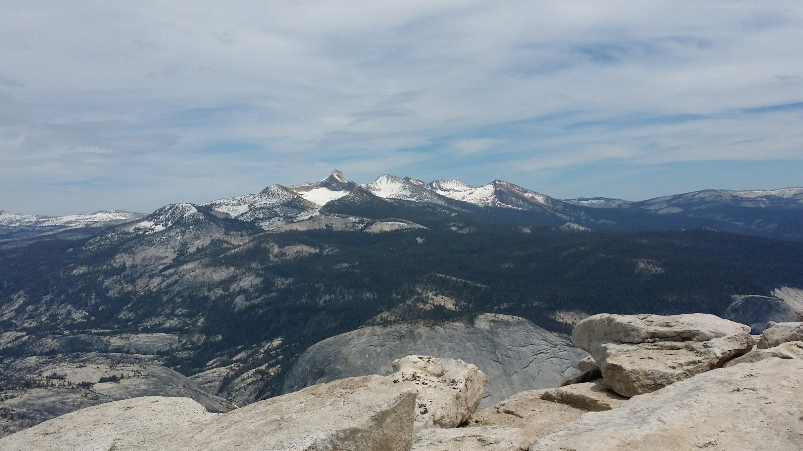
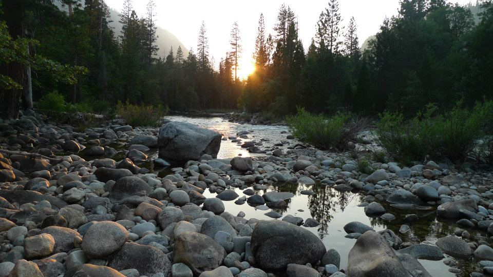
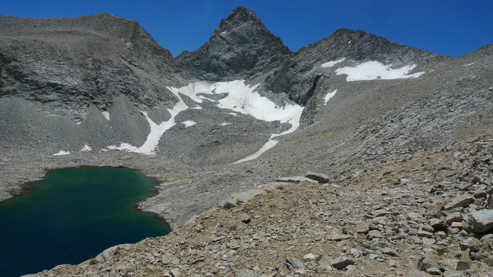
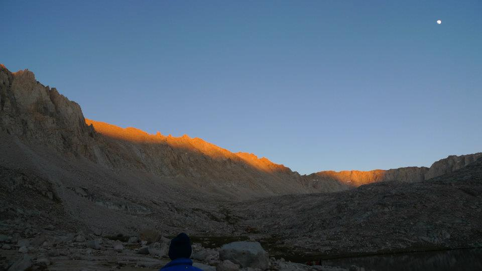

Mr G
Hiking Ninja!

Featured Work
Appify
Link to project

Appify
Link to project

Appify
Link to project
Mount Lyell etc from the summit of Clouds Rest
This photo was taken from the summit of Clouds Rest, looking toward Mount Lyell, in April 2015
The moon over Guitar Lake
 This photo was taken just after sunset at Guitar Lake below Mount Whitney, in late June 2012.
Sunset in Kings Canyon at Cedar Creek
This photo was taken just before sunset in Kings Canyon, June 2012, at Cedar Creek.
Mountain and lake on the way up Forester Pass
This photo was taken while hiking up Forester Pass in Kings Canyon National Park, in June 2012